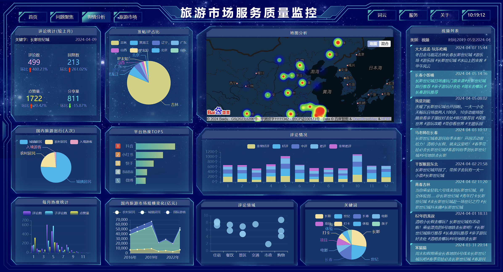

<!DOCTYPE html>
<html>

<head>
    <title>README</title>
    <script src="https://cdn.jsdelivr.net/npm/showdown/dist/showdown.min.js"></script>
    <style>
        body {
            color: rgba(250, 160, 160, 1);
            font-style: italic;
        }

        code {
            font-family: Consolas;
            font-style: normal;
            font-weight: 500;
            color: aliceblue;
            background-color: #555;
            padding: 3px;
            border-radius: 3px;
            padding-left: 6px;
            padding-right: 6px;
        }

        li {
            padding-top: 4px;
            padding-bottom: 4px;
        }

        div {
            background-color: #333;
            padding: 4% 8%;
            width: auto;
        }

        body {
            margin: 0% 20%;
            background-color: #111;
        }
    </style>
</head>

<body>
    <div id="markdown-content"></div>


    <script>
        const markdownText = `
    <a style='color: #ffa; font-size: 36px;'> 无感知旅游服务质量评价系统 </a>
---
## <a class='sec_tit' id='dir'> 目录 </a>

<div class='sec_div'>
    <ul>
        <li> <a href='#p1'> 项目背景 </a> </li>
        <li> <a href='#rd'> 使用说明 </a> </li>
        <li> <a href='#p2'> 功能简介 </a> </li>
        <li> <a href='#p3'> 项目结构 </a> </li>
        <li> <a href='#p4'> 技术栈 </a> </li>
        <li> <a href='#p5'> 待开发 </a> </li>
    </ul>
</div>

---

## <a class='sec_tit' id='p1'> 项目背景 </a>
<a class='sec_bk' href='#dir'> 返回目录 </a>

---

- #### 旅游市场
旅游成为小康社会人民美好生活的刚性需求。“十三五”期间年人均出游超过4次。人民群众通过旅游饱览祖国秀美山河、感受灿烂文化魅力，有力提升了获得感、幸福感、安全感。旅游成为促进经济结构优化的重要推动力。各省和重点旅游城市纷纷将旅游业作为主导产业，放在优先发展的位置，为旅游业营造优质发展环境。

- #### 高质量发展
进入新发展阶段，旅游业面临高质量发展的新要求。党的二十大报告中强调，“高质量发展是全面建设社会主义现代化国家的首要任务”。这要求我们构建高水平社会主义市场经济体制，建设现代化产业体系。

- __旅游市场服务质量评价__

    <a href='https://www.gov.cn/zhengce/content/2022-01/20/content_5669468.htm' style='color: #ff6;'>《“十四五”旅游业发展规划》</a> 将“建立健全旅游市场服务质量评价体系”列为重点工程。2024年03月，文化和旅游部办公厅发布开展旅游市场服务质量评价体系建设试点工作的通知，这一举措是提升服务质量、推动行业高质量发展的有力举措

---

## <a class='sec_tit' id='p2'> 功能简介 </a>

<a class='sec_bk' href='#dir'> 返回目录 </a>

---

本项目使用python对旅游的相关数据进行分析，并输出到网页中以图表的可视化形式展示出来。

*示例:*


---



---

## <a class='sec_tit' id='rd'> 使用说明 </a>

<a class='sec_bk' href='#dir'> 返回目录 </a>

---


- *使用.venv环境*
    - 0. 创建venv环境 <code>> python -m venv .venv</code>
    - 1. cmd/PS 进入根目录下的 <code>./.venv/Scripts/</code>
    - 2. 激活环境 <code>(cmd)> activate (PS)> ./activate</code>
    - 3. 安装依赖 <code>> pip install -r requirements.txt</code>
    - 4. 返回根目录 <code>cd ../..</code>
    - 5. 运行主程序 <code>> python main.py</code>
    - 6. 输入参数 <code>> 伪满皇宫/长影世纪城</code>
    - 7. 打开 index.html 文件

---

- *使用本机python环境*
    - 1. cmd/PS 进入根目录 <code>./</code>
    - 2. 安装依赖 <code>> python -m pip install -r requirements.txt </code>
    - 3. 运行主程序 <code>> python main.py </code>
    - 4. 输入参数 <code>> 伪满皇宫/长影世纪城</code>
    - 5. 打开 index.html 文件

---

## <a class='sec_tit' id='p3'> 项目结构 </a>

<a class='sec_bk' href='#dir'> 返回目录 </a>

---

#### 无感知旅游服务质量评价系统

- venv
    - (虚拟环境)
- css
    - style.css
- data
    - history
    - web_ls
        - link.txt
    - 旅游业发展情况.csv
    - 年度数据.csv
    - search_comments.csv
    - search_contents.csv
    - readme.txt
- img
    - (图片文件)
- js
    - baidu_o.js
    - baidu.js
    - echarts.min.js
    - readme.txt
- src
    - info.py
    - location.py
    - sol_keyword.py
    - readme.txt
- index_o.html
- index.html
- link_o.html
- link.html
- README.md
- requirements.txt

---

## <a class='sec_tit' id='p4'> 技术栈 </a>

<a class='sec_bk' href='#dir'> 返回目录 </a>

---

- html + css + js ( echarts, baidu )
- python ( numpy, pandas, jieba, nltk )
- 预计添加: SQL, python ( hanlp, pytorch )

---

## <a class='sec_tit' id='p5'> 待开发 </a>

<a class='sec_bk' href='#dir'> 返回目录 </a>

---

- 情感分析
- 词云
- 问题聚焦

<style>
    .sec_tit {
        color: rgba(250, 50, 120, 1);
    }

    .sec_bk {
        color: rgba(160, 120, 220, 1);
        font-style: italic;
    }

    .div_desc {
        color: rgba(250, 160, 160, 1);
        font-style: italic;
    }

    .div_desc a {
        color: rgba(250, 80, 160, 1);
    }

    .div_desc h4 {
        color: rgba(255, 200, 200, 1);
    }

    .sec_div li {
        color: rgba(240, 120, 120, 1);
        font-style: italic;
        font-size: 18px;
    }

    .sec_div li a {
        color: rgba(240, 120, 120, 1);
        font-style: italic;
        font-size: 18px;
    }

    .sec_div4 h4 {
        font-style: italic;
        color: rgba(255, 160, 160, 1);
    }

    .sec_div4 li a,
    .sec_div4 li {
        color: rgba(240, 120, 120, 1);
        font-style: italic;
        font-size: 18px;
    }

    .sec_div4 li li a,
    .sec_div4 li li {
        color: rgba(200, 160, 100, 1);
    }

    .sec_div4 li li li {
        color: rgba(180, 200, 100, 1);
    }

    .sec_div2 {
        color: #fa8;
    }

    .sec_div3 {
        color: #f8a;
    }
</style>
`;
        var converter = new showdown.Converter();
        var html = converter.makeHtml(markdownText);
        document.getElementById("markdown-content").innerHTML = html;
    </script>
</body>

</html>